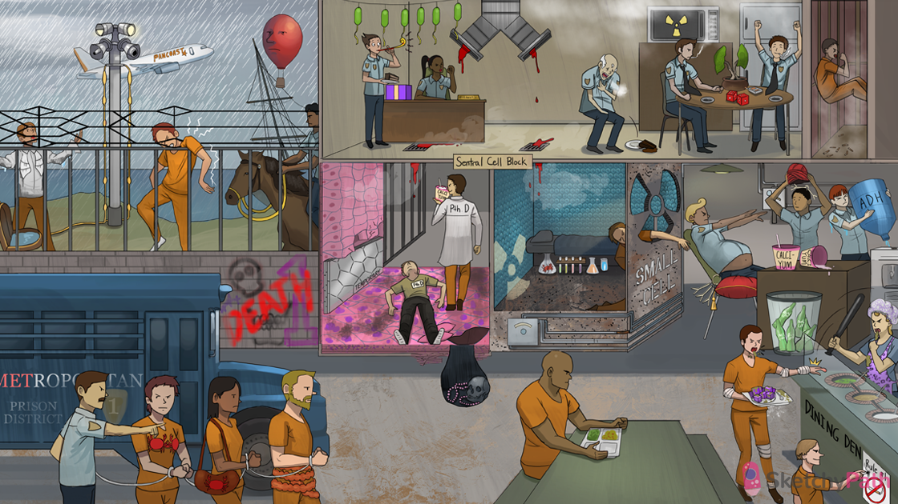

“METropolitan bus: metastases are the most common cancers in the lung
Crab bra: breast cancer commonly metastasizes to the lung
Colon belt: colon cancer commonly metastasizes to the lung
Kidney purse: renal cancer commonly metastasizes to the lung
Risky red dice: risk factors for developing lung cancer (e.g. smoking, radiation, pulmonary fibrosis, toxins)
Smoking: most important risk factor for developing lung cancer (20x increased risk)
Radiation symbol: radiation to chest (lung cancer risk factor)
Fibrous pulmonary tree: pulmonary fibrosis (lung cancer risk factor)
Toxic insulation: workplace exposures, i.e. asbestos, radon, metals, and aromatic hydrocarbons (lung cancer risk factors)
Gasping: lung cancer can present with dyspnea
Thin arm: lung cancer can present with weight loss
Falling food: lung cancer can present with decreased appetite
Clutching chest: lung cancer can present with chest pain (especially in younger patients)
Coughing warden: lung cancer can present with coughing (especially central tumors)
Wheezy party blower: lung cancer can present with wheezing (especially central tumors)
Recurrent bacterial lanterns: lung cancer can present with recurrent pneumonia (especially central tumors)
Bloody air duct: lung cancer can present with hemoptysis (especially central tumors)
Small prison cell: small cell lung carcinoma
Squamous epithelial tile: squamous cell carcinoma (non-small cell lung carcinoma)
“Dining Den”: adenocarcinoma (non-small cell lung carcinoma)
Large prison inmate: large cell carcinoma (non-small cell lung carcinoma)
“Sentral Cell Block”: centrally located tumors include Small cell and Squamous cell carcinoma
“No smoking” in the Dining Den: adenocarcinoma is the most common type of lung cancer in non-smokers
Young lunch lady: adenocarcinoma is the most common lung cancer in women and patients under 40
Smoker in the Dining Den: adenocarcinoma is the most common type of lung cancer (in smokers and non-smokers)
Glandular hair net: adenocarcinoma will show glandular characteristics on histology (e.g. acinar, papillary, mucinous)
Behind the glass plate: adenocarcinoma in situ (AIS) has not yet crossed the basement membrane
Layer lining food containers: AIS consists of tall columnar cells spreading along alveolar septae (appears to thicken alveolar walls)
Leopard print: surface alveolar growth (as seen in AIS) is called a LEPIDIC growth pattern
Coughing up mucus: cells in AIS can be mucinous → mucus production
Mucus blob on chest: AIS may present like pneumonia on CXR (hazy consolidation)
Jello cubes beyond glass barrier: adenocarcinoma has cuboidal to low columnar cells (hyperchromatic with prominent nuclei)
Coughing up mucus: adenocarcinoma cells can produce mucin → copious sputum production
Columnar cells: normal respiratory epithelium is pseudostratified and columnar
Temporary metal plates: columnar epithelium can be replaced with more resistant stratified squamous cells (reversible squamous metaplasia)
Disgusting squamous tiles: squamous metaplasia can progress to dysplasia (disordered squamous cells with hyperchromasia and mitotic figures)
Cells breaking through floor: squamous cell carcinoma in situ can progress to invasive carcinoma (invades basement membrane)
Pearl necklaces: well-differentiated squamous cell carcinoma exhibits keratin pearls and intercellular bridges
Necrotic skull in cavity: squamous carcinoma may exhibit central necrosis and cavitation
Sheets of bubble wrap: small cell carcinoma contains sheets of round blue (basophilic) cells with scant cytoplasm
Granite cell: small cell carcinoma has granular chromatin (“salt and pepper), and stains positive for chromogranin (neuroendocrine marker)
Neuroendocrine wiring: small cell carcinoma is a neuroendocrine tumor
Escaping prisoner: small cell carcinoma metastasizes early (discovered diffusely in both lungs)
Radiation window: small cell carcinoma is sensitive to radiation treatment
Chemistry set: small cell is sensitive to chemotherapy
Large prisoner: large cell carcinoma contains large undifferentiated anaplastic cells (with large nuclei and prominent nucleoli)
Wet pleural shirt and pericardial case: lung cancer can cause pleural and pericardial effusions (regional tumor spread to pleura and pericardium)
“Pancoast Airlines”: Pancoast syndrome occurs with regional tumor spread to the superior pulmonary sulcus
Electric plexus fence: Pancoast tumors can invade the medial roots of the brachial plexus
Shoulder pain: invasion of the brachial plexus causes shoulder pain, arm/neck pain, hand muscle wasting (pancoast tumor)
Air raid horn: Horner’s syndrome (ptosis, miosis, anhidrosis) occurs with regional tumor spread to the sympathetic chain ganglia (pancoast tumor)
Constricted horn: constricted pupil (miosis) seen in Horner’s syndrome
Droopy search light: ptosis seen in Horner’s syndrome
Mediastinal mast: lung cancer may extend medially and involve mediastinal structures
Horse with laryngeal reigns: hoarseness due to recurrent laryngeal nerve involvement (regional tumor spread to mediastinum)
Red balloon face: SVC syndrome → compression of the superior vena cava causes swelling of the face, neck, and upper extremities (regional tumor spread to mediastinum)
Inappropriately wet head: SIADH is a paraneoplastic syndrome associated with small cell carcinoma (ADH release from tumor)
Antibody keys and empty calci-yum cups: lambert eaton myasthenic syndrome (LEMS) is a paraneoplastic syndrome associated with small cell carcinoma (antibodies against voltage-gated calcium channels)
Acetyl-cola trash bin: LEMS causes decreased acetylcholine release due to blocked presynaptic calcium channels → proximal muscle weakness
Struggling to get up: LEMS causes symmetrical proximal muscle weakness (decreased acetylcholine release)
Antibody keys under cerebral turban: neurological paraneoplastic syndromes associated with SCC (e.g. cerebellar degeneration, encephalomyelitis) are due to autoimmune response against antigens in neural tissue
Cushion: Cushing’s syndrome is a paraneoplastic syndrome associated with small cell carcinoma (ACTH-like substance release from tumor)
Clubbed fingers: hypertrophic osteoarthropathy (HOA) is a paraneoplastic syndrome associated with adenocarcinoma (digital clubbing, arthropathy)
Wrapped joints: HOA causes sudden arthropathy of the hands and wrists (less commonly elbows, knees, ankles)
Raised calcium cup: humoral hypercalcemia of malignancy is a paraneoplastic syndrome associated with s”ca++”mous cell carcinoma (PTHrP release from tumor)
Knocked out PhD: humoral hypercalcemia of malignancy is associated with suppressed PTH levels (PTH-independent hypercalcemia)
PhD disguise: humoral hypercalcemia of malignancy is caused by parathyroid hormone-related protein (PTHrP) release from tumor (PTH-independent hypercalcemia)